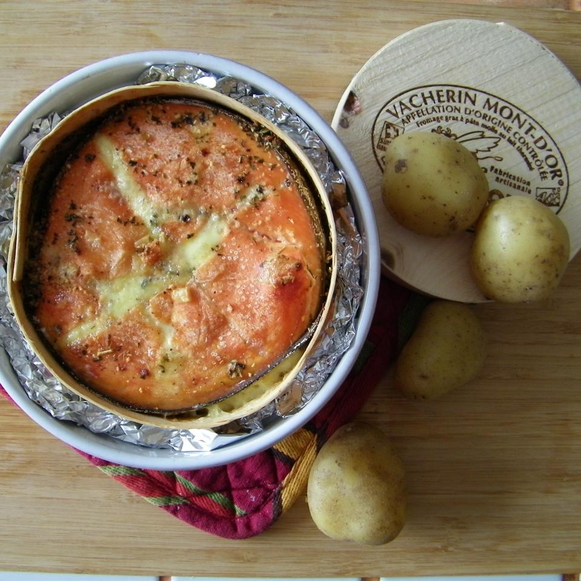

Garlicky Baked Brie

Description
I took this to my book club meeting and had rave reviews.
You have to like garlic and hot spices. It was so easy to make
I was worried it wouldn't taste good. Boy was I wrong!!! I used
crackers but I think sliced baguette would be better.
Easy to prepare and quite yummy! I didn't have any red pepper jelly
so used another milder jelly and it was still excellent. Would be
even better if I'd followed the recipe!
Ingredients
- 1 (9 inch) wheel Brie cheese
- 5 cloves garlic, crushed
- 1 ½ tablespoons red pepper jelly, divided
Steps
- Preheat oven to 350 degrees F (175 degrees C).
- Cut Brie cheese round in half lengthwise, creating two thinner wheels.
Spread crushed garlic on cut surface of 1 half; top garlic layer with 1 1/2 teaspoons red pepper jelly.
Place the other Brie cheese half on top of filling. Spread remaining 1 tablespoon red pepper jelly on top of
Brie cheese; place in a round casserole dish.